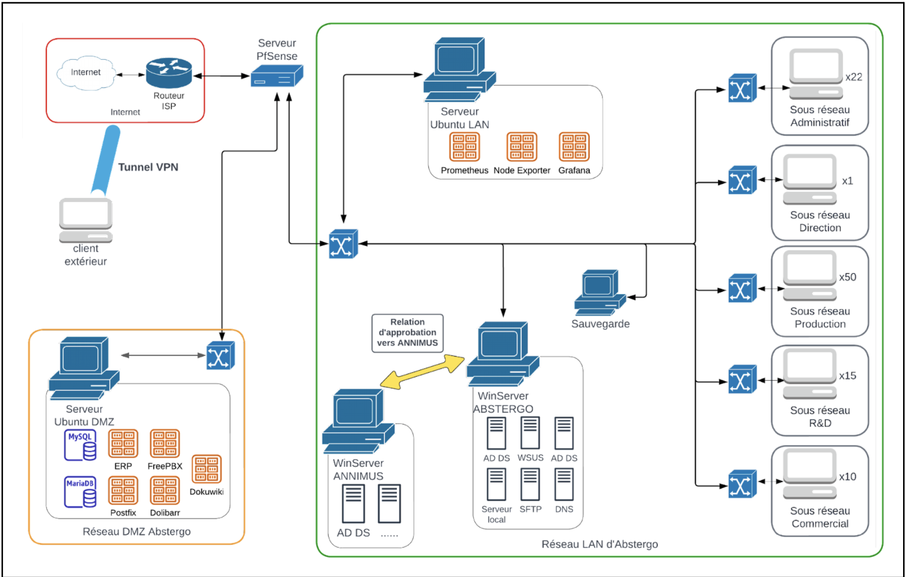

During this project, we initially had the architecture of an information system of a company that was going to be acquired. However, this infrastructure was very rudimentary, so it needed to be modified in order to comply with current security standards.
To do this, we started by setting up an Active Directory to enable all employees to log into their sessions on the various computers of the company.
Next, we had to set up a firewall as well as VPNs, and other security measures in order to secure our network against threats that could come from the outside.
Finally, we had to implement containerization on our network so that certain applications could be available for employees on their sessions, such as the company's
internal software or a monitoring system to oversee the performance of our information system.
We also had to set up a backup plan for our company in order to prevent various risks that could occur on our network, and to establish measures for resuming activity as quickly as possible.